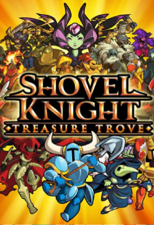
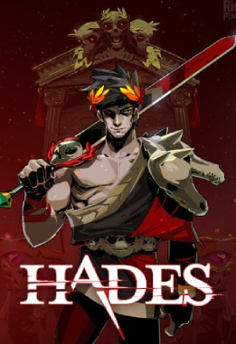
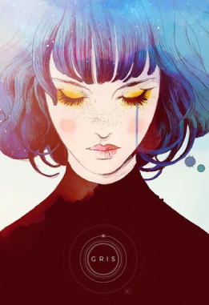

Top Juegos Indies:
Cuphead:

Cuphead es un clásico juego de acción de correr y disparar muy centrado en las batallas contra jefes.
Creado por Studio MDHR,
cautivó al público con su estética inspirada en las caricaturas de los años treinta,
y cuyas mecánicas de juego se presentaban como interesantes, divertidas y adictivas.
Juega como Cuphead o Mugmanmientras atraviesas mundos extraños,
adquiere nuevas armas, aprende poderosos supermovimientos
¡y descubre secretos ocultos mientras intentas pagar tu deuda con el diablo!
Shovel Knight: Treasure Trove
Shovel Knight: Treasure Trove es la edición completa de Shovel Knight,
un plataformero en 2D desarrollado y publicado por la compañia independiente Yacht Club Games
en 2014 y financiado a través de Kickstarter, obteniendo muchas críticas favorables.
es un juego en gráficos de 8-bit que intentan emular la estética del Nintendo Entertainment System.
El jugador deberá superar múltiples niveles, enemigos y a un jefe de una temática determinada
um navio misterioso que serve os caprichos de criaturas doentes e poderosas.
en la cual encontrará tesoros, armaduras, mejoras e items
que le ayudarán en su búsqueda.
Hades:
Hades es un juego roguelike de Supergiant Games
creadores de Bastion, Transistor y Pyre.
Juegas como Zagreo, el hijo inmortal de Hades,
en su misión de escapar del inframundo,
enfrentándose a numerosas almas perdidas en el camino.
La muerte no es un inconveniente para Zagreo, regresando a su habitación en el palacio de Hades
para reflejarse en el Espejo de la Noche y volver a intentarlo.
Recibe bendiciones de otros dioses del Olimpo y encuentra
tesoros que te ayuden en el siguiente intento de escapar.
Gris:
Gris es un juego indie de plataformas y aventuras desarrollado
por el estudio español de juegos independientes Nomada Studio
y publicado por Devolver Digital para Nintendo Switch, macOS y Microsoft Windows.
El juego fue lanzado el 13 de diciembre de 2018.
Gris es una experiencia serena y evocadora, libre de peligros, frustración y muerte.
Los jugadores explorarán un mundo diseñado meticulosamente que cobra vida gracias a unos
gráficos delicados, una animación detallada y una elegante banda sonora original.
Según las distintas partes del mundo de Gris se vuelvan accesibles,
durante el juego se presentarán puzles sencillos,
secuencias de plataformas y desafíos opcionales basados en la habilidad.